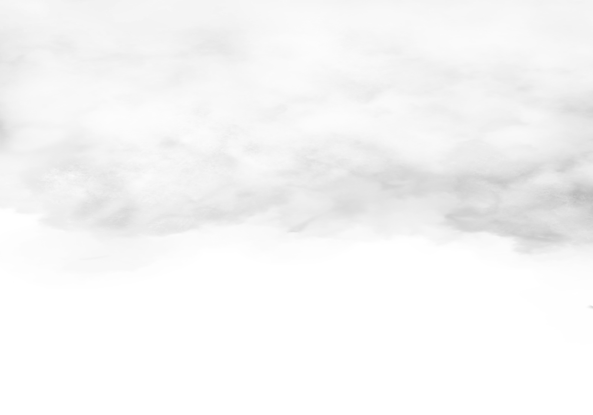
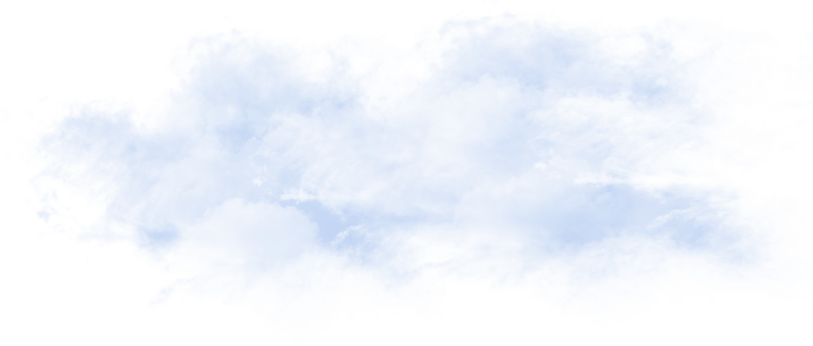
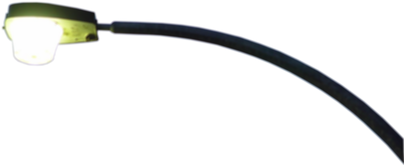
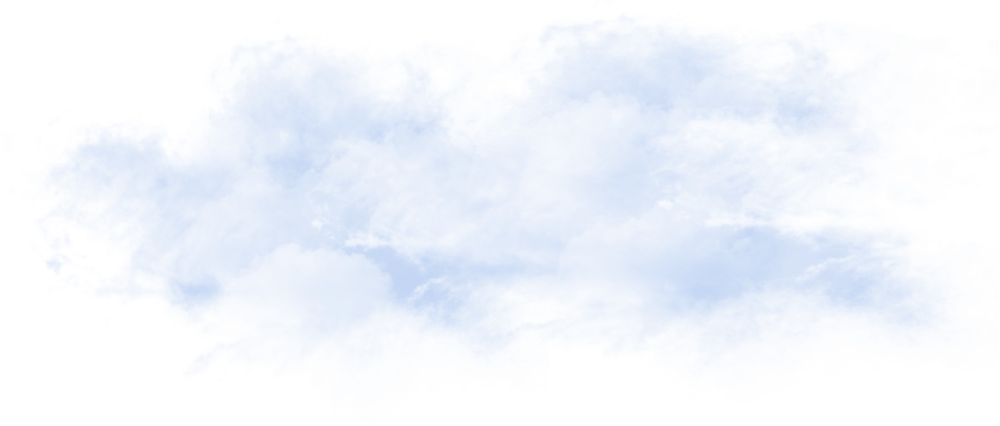
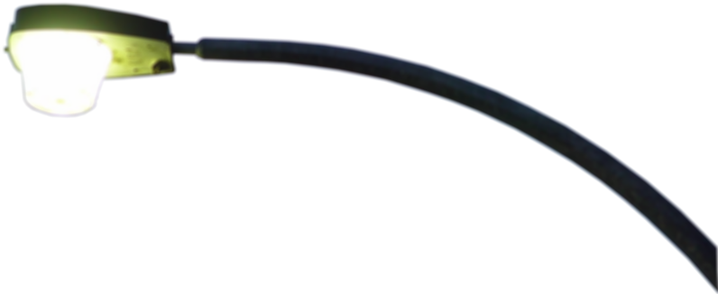
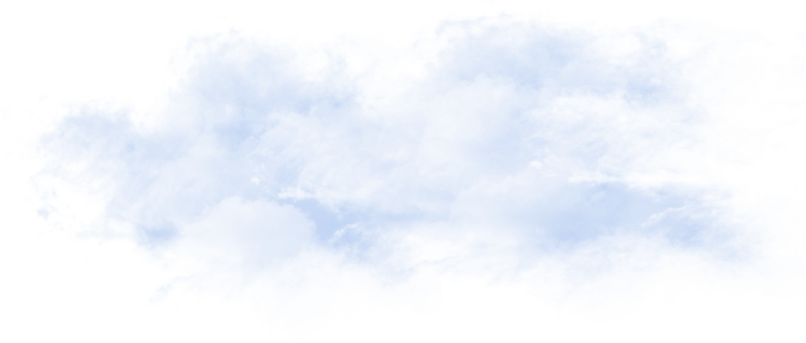
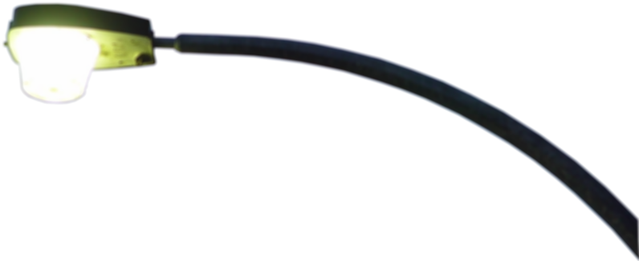
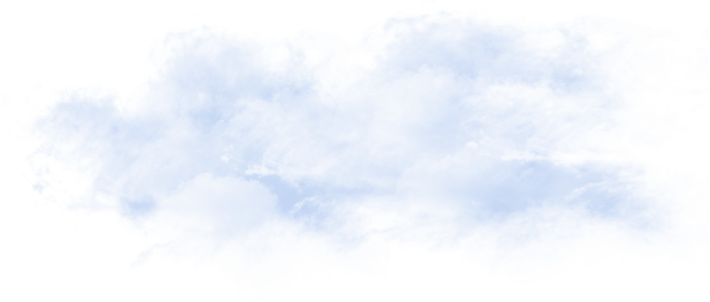
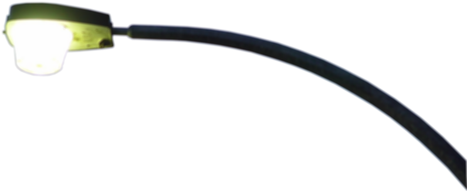

Peter Surowski
design + development
full-stack development
graphic design
strategic communications
 



 



Crime Watcher
Cornered!
Bridge of Death
Timesheet
Capoeira Riverside
Creative Kids Club
UCR copywriting projects
Testimonials page
Web Development
HTML | CSS | JavaScript/jQuery | PHP | Node.JS | React.JS | MySQL | Mongo.db | WordPress | Git
Software
Adobe Photoshop | Illustrator | Premier | Microsoft Word | Excel | PowerPoint
Communications
Copywriting | copyediting | AP style | researching | SEO | SEM | PPC | social media marketing
Fullerton College | 2018–present
Peter currently works as a WordPress developer in the Office of Campus Communications at Fullerton College.
UC Riverside | 2017–2018Peter worked as a creative copywriter in the Student Affairs Marketing and Communications office of UC Riverside. There he and his team members crafted webpages, emails, posters, T-shirts and other media to educate the student body.
University of Redlands | 2016–2016
As the Web Content Manager for University of Redlands, Peter designed web pages, wrote web page content, managed assets, shot photos, made videos and managed an online calendar.
Press-Enterprise | 2012–2016
At the Press-Enterprise newspaper, Peter wore two hats. As a member of the web team, he managed the website and promoted content via social media. As a member of the breaking news team, he reported and wrote stories. He also did photography and videography.
AOL | 2010–2012
Peter worked as an online news editor at AOL running one of its "Patch" websites. His duties included managing content on web pages, SEO, social media marketing, copywriting, doing photography, recording and editing videos, managing a crew of freelancers and organizing events to promote the online product.
Specialty Coffee Retailer | 2009–2010
As the web content editor for a magazine called Specialty Coffee Retailer, a monthly publication catering to coffee industry professionals, he managed content on the website and created/edited content for the large “New Products” section of the print product.
Valley News | 2006–2009
Peter began his career in communications as the only full-time staff writer for Valley News, a small, independently owned weekly newspaper based in Fallbrook, Calif. He wrote much of the copy for the print and online products and he did photography.
Freelance Web Development | 1997–2006
Through his teens and early 20s, Peter made his way as a freelance web developer by day and a working musician by night.
UC Irvine: Certificate in Web Development, 2017
California State University, Fullerton: Master's Degree in Communications, 2011
California State University, Fullerton: Bachelor's Degree in History, 2006
Mt. San Jacinto College: Certificate in Multimedia Arts, 2000